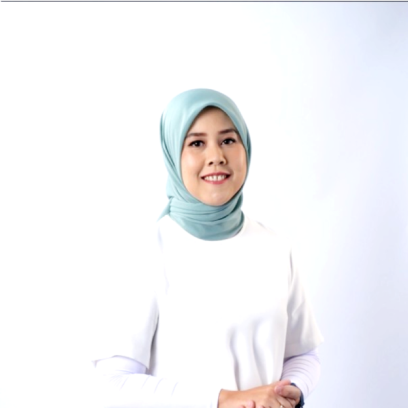
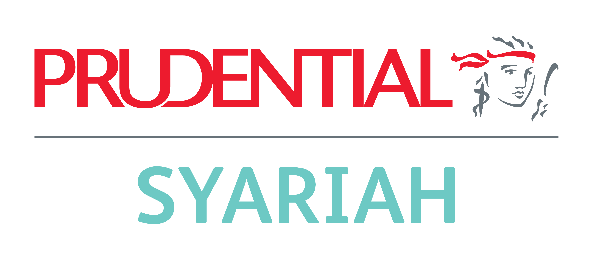

Indah S. Rachmadani
VP, Head of HRBP — Prudential Syariah
- 15+ tahun pengalaman di Strategic HR & People Transformation
- Winner of Prudential CEO & Leadership Award dan Shell Global Commercial EVP Award
Pengalaman Sebelumnya
- Sr. Manager HRBP — Lazada
- Sr. Manager HC Talent — PT Semen Indonesia
- Project Leader, Sales Ops & HR — Shell
- OD & Performance Specialist — Holcim & AXIS